Feuchte/Salz?
Feuchte/Salz?
 Heizung?
Heizung?
 Fenster schwitzen?
Fenster schwitzen?
 Schimmelpilz wuchert?
Schimmelpilz wuchert?
 Die
aufgenäßte, schwarz verschimmelte und verfärbte Dämmung - inzwischen Standard in deutschen Decken zum Dachgeschoß, Dächern, Dachschrägen und Wänden!
Die
aufgenäßte, schwarz verschimmelte und verfärbte Dämmung - inzwischen Standard in deutschen Decken zum Dachgeschoß, Dächern, Dachschrägen und Wänden!
Leider schon bald nach Einbau geht es los, hier noch vor dem Einzug:
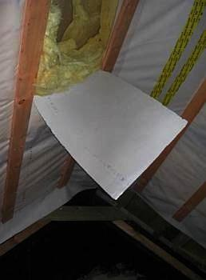
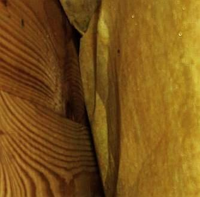
Alles patschnaß unter der Folie: Wärmedämmung aus Mineralfasermatten, Holzschalung, Sparren. Die Wassertropfen glitzern auf der Dämmstoffoberfläche, das Holz steht feuchtdunkel und harrt des Hausschwammes.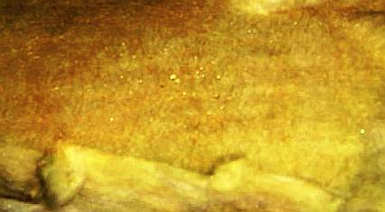
Hier im Detail, der Dämmstoff ist naß wie ein Schwamm,seine Oberfläche klatschnaß, die Tropfen glitzern.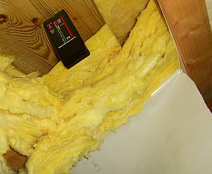
Meß mer mal: Oh, der Protimeter mini - Holzfeuchtemeßgerät auf der Grundlage von Widerstandsmessung (Stromtransport zwischen Einstechdornen) schlägt voll aus! Also über 23 Prozent Holzfeuchte!!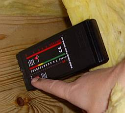
Da müssen wir ins Detail, den Umschaltknopf drücken und auf der rechten Skala weitermachen: Ca. 27 Prozent!!! Wie trocknet man dieses Fließwasser aus der nicht kapillar aktiven und deswegen bestens absaufenden Sparrenzwischendämmung zwischen Dampfbremsfolie und Holzschalung, die obendrein oberflächig dummerweise total mit Dichtbahn abgeklebt ist? Gar nie nicht! Das Ende des Lieds: Rausbau, Rückbau. Und korrekt neu konstruieren, um sowohl die natürlichen Feuchteschwankungen der Dachhölzer wie auch die Wohnfeuchte sicher und dauerhaft abzuführen. Nach EnEV und Norm, nach dem geballten Fachwissen von Industrie, Handwerk und vielen Planern gelingt das bestimmt nicht, oder?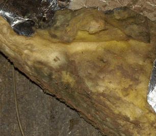
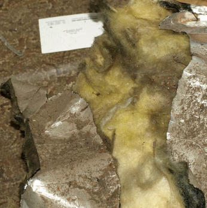
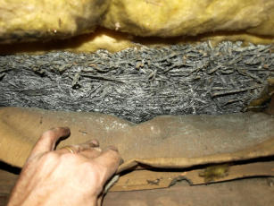
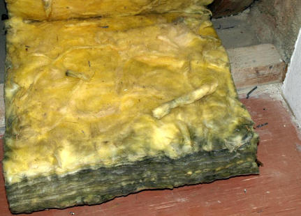
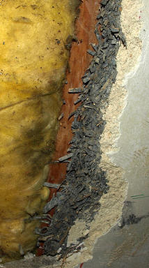
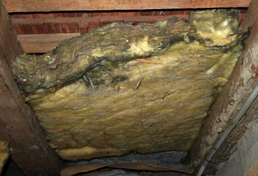
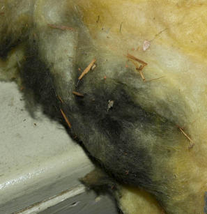
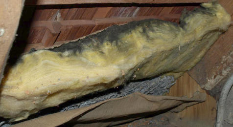
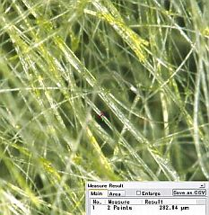
Diese interessante Makroaufnahme (links) einer unverpilzten Partie der Dachdämmung aus Mineral-Dämwolle belegt, wie glassplittrig so eine Mineralfaserdämmung in Wirklichkeit ist. Der von so eckligem Dämmstoffmüll betroffene und entsetzte Hausbesitzer Ralf Ohmberger hat sich natürlich tiefschürfendere Gedanken gemacht und schreibt mir dazu folgende interessante Fragestellungen, die sich dabei aufdrängen:Na, schnackelt's? Wer wird sich diese schönen Erneuerungspositionen und jeder Wirtschaftlichkeit, Kostensicherheit oder gar Denkmalpflege (Abhacken der fachgerecht auskragenden Sandsteinsohlbänke, Vernichtung aller wunderschönen historischen Kastenfenster und Außentüren!) Hohn sprechenden Baumaßnahmen denn in Wahrheit ausgedacht haben? Die hier nur gekürzt angegebenen Herstellernamen/Produktbezeichnungen weisen den Weg. Da das Energieeinspargesetz im § 5 fordert, daß die Energiesparmaßnahmen "wirtschaftlich vertretbar sein" müssen, und dies im hier gegebenen Fall nicht mal ansatzweise zu erwarten ist, liegt wieder mal ein Gesetzesverstoß zugunsten der darbenden Dämmstoff- und Isolierfensterindustrie bzw. der vom Baukosten abhängigen Planerhonorierung vor. Mit nach oben offener Kostenexplosionsskala: "Bei zutrage treten von verdeckten Schäden und Mängeln ..." - die bei einer qualifizierten Bauuntersuchung doch nicht so unbekannt bleiben müssten, um später vorzugsweise in Regiestunden die Kosten nach oben zu treiben, wenn es kein Zurück mehr gibt ...
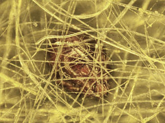
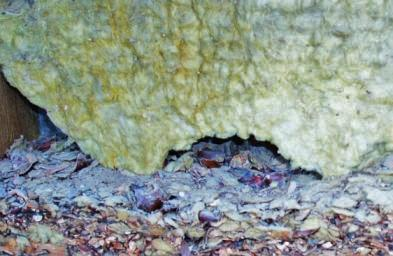
Das Detailbild links aus einer schwarz verschimmelten Mineralwolle / Glaswolle-Dachdämmung zeigt, wie man mit Dämmwahn die Schöpfung bewahren kann. Und das schätzen nicht nur die die Fasern beschwärzenden Pilze, sondern auch diverse chitinbepanzerten Insekten aus der Sortierung Hausstaubmilbe u.ä., von denen eines hier mausegleich aus dem Fasergewirr hervorspitzt. Schädling, duck dich! Das verhuschte Spinnenmilbenkäferlein ist natürlich entsetzt angesichts des überraschenden Interesses an seiner Behausung. Wie ließ es sich doch im Dunkeln gut munkeln. Doch schon vorbei - wir wünschen weiter: Guten Appetit!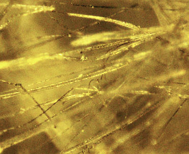
Durch die Belichtungsverhältnisse unter dem Mikroskop lassen sich bei dem gewählten Vergrößerungsfaktor die schwarz an den Fasern /Faserbruchstücken anklebenden Schimmelpilzwucherungen leider nicht in aller notwendigen Deutlichkeit herausarbeiten. Doch wer etwas genauer hinguckt, kann die Schimmelbeläge doch hier und da ausmachen.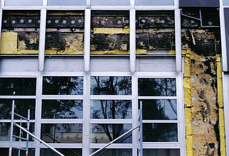
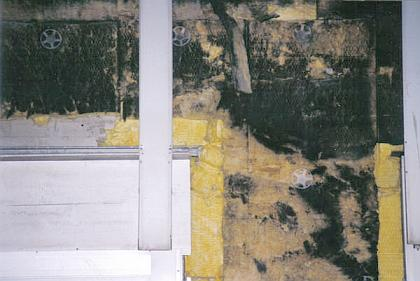
Nasse, schwarze, schimmelpilzbefallene und pilzdurchwachsene Wärmedämung (Glaswollematten / Glasfaserdämmung / Glaswolle-Dämmstoff) in einer vorgehängten Fassade in Linz (Übersicht und Detail). Ist das nicht ekelerregend, was kluge Planer und fleißige Handwerker hinterlassen? Und das soll jetzt die Wärme dämmen, die beim Beheizen des Dachgeschosses entweichen will?? Wer's glaubt, wird Österreicher (Tu felix Austriae ...). Und da der Dachbodenausbau bzw. Dachausbau ohnehin schon der teuerste Weg ist, Wohnraum zu schaffen und auch Denkmalschutz und Denkmapflege oft nicht umhin können, diesem Blödsinn ihren amtlichen Segen zu erteilen - ja freilich, in die Standgaube müssen Holzfenster, aber dreifach lippengedichtet und selbstverständlich mit Wärmeschutzglas / Spezial-Isolierglas - sind dort eben die allerbesten Voraussetzungen für nasse Dämmungen in den schrägen Wänden der Sparrenebene gegeben.Wer hat das eigentlich noch nicht erlebt? Dampfdiffusionsoffene Unterspannbahn - die Lachnummer für Anfänger: Luft geht durch, Dampf bleibt da, wo er
hingehört: am kalten Folienbauteil - das Verursacherprinzip funktioniert hier wenigstens 100%. Nach kurzer Bewitterungszeit ist auch die intelligenteste
Dampfbremse (Sie kennen die Namen) mit Dreck, Speck und Mikroorganismen zugesetzt. Die Makrofotos sind bekannt und kursieren als Lachnummer in der
Branche!
Einen wesentlichen Beitrag zur Auffeuchtung der Zwischensparrendämmung liefert ja nicht nur die von Anfang an oder irgendwann zuströmende Luftfeuchte von innen (Winter) oder außen (Sommer), sondern auch die Holzfeuchte der Sparren und Schalungen. Bei VOB-gerechtem Feuchtegehalt des Holzes von umax = 20 Prozent (das bekommt das Holz im Kaltdach automatisch auch jeden Winter!) und einem durchschnittlichen Holzvolumen von ca. 0,05-0,07 m³/m² Dachfläche fällt als Sommerkondensat im Sommerfall bei ca. 60 Prozent relative Luftfeuchte und 20 °C Außentemperatur und sich daraus ergebender Holzfeuchte von ca. 11 Prozent ca. 2 Liter Wasser je Quadratmeter an. Und zwar an der kältesten Stelle - dank sommerlichem Dampfdruckgefälle von außen - wo es sehr heiß wird - nach innen - wo es dann doch leicht kühler ist - eben innen an der Außenseite (nicht Raumseite!) der Dampfbremsfolie. Dort soll es ja dann auch gewolltermaßen pottdicht sein. Was macht jetzt das überschüssige Wasser im Sparrenzwischenraum? Genau: Schimmelpilz- und Hausschwamm-Zucht.
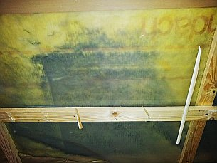
Datum: 20.08.12 20:58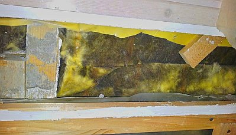
Seit Wochen beschäftige ich mich jetzt mit dem Thema. Wie konnte das passieren? Was lief falsch? Wie kann so was noch 15 Jahren in einem neuen Haus auftreten, gebaut von Profis?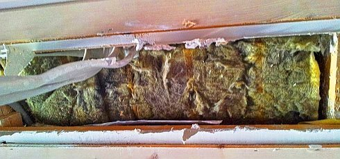
Und so gehts in einem weiter. Jeder erklärt einem, das was er gerade verkauft ist das absolut Beste. Klar, vor 15 Jahren war man einfach noch nicht so weit. Da haben wir leider Pech gehabt. Aber jetzt ist man viel schlauer.Selbst der kostensteigernde Blower-door-Test kann bei den leicht gebauten und ebenso leicht beweglichen Bauweisen bestenfalls bis zum Winter unkontrollierten Feuchteeintritt in die Dämmkonstruktion verhindern, danach könnten die Dichtbänder für die widerlichen Dampfbremsen / Dampfsperren / Folien als von "Baupysikern" und der sog. Bauchemie begünstigten bzw. deren Muffis in den Normausschüssen geheiligten Sollkondensatebenen durch thermische Dehnung abgerissen sein bzw. langsam weichmacherfrei, versprödet und unwirksam. Daß es dabei um Energieverluste geht, glauben ohnehin nur noch die Theoretiker, die den klassischen schimmelverpilzten Dämmschaden noch nie gesehen haben.
Zu raten ist deshalb allen Energiesparaposteln, die auf den k-Wert bzw. U-Wert oder auch sd-Wert hereingefallen sind, auch mal die ständigen Bauschadensveröffentlichungen der Sachverständigen zu diesem Thema zu studieren. Und dann eine bewährte Dachdämmung einbauen: Mit Massivbaustoffen wie Vollholz, Backstein usw. wirkungsvoll gedämmt und nach alter Vääter Sitte entlüftet / unterlüftet. Konstruktionsdetails je nach örtlichen Verhältnissen, Statik und Geldbeutel.
Geradezu irre Stilblüten aus dem Dämmstofflobpreis leistet sich das Mitgliedermagazin "Familienheim und Garten" in seiner Ausgabe 12/17 in der Rubrik "Praktisch & Gut" unter dem Titel "Zimmerdecke - Neue Materialien für den Um- und Ausbau" und dem Abschnittstitel "Dämmen nicht vergessen!":Die feuchteadaptive Dampfbremse wird dann beschworen. Taugt aber auch nix, wie Prof. Möhring festgestellt hat, da die Bremse schnell verschleimt und mikrobiell be- und durchwachsen wird und damit ihre angebliche Funktion einbüßt. Möhrings Nahaufnahmen der besiedelten Feuchtedaptionsdampbremse waren ein Schocker im Saal der Professorentagung in Bad Dürckheim anno dunnemals. Ein Blick in die Abgründe der Hölle ...
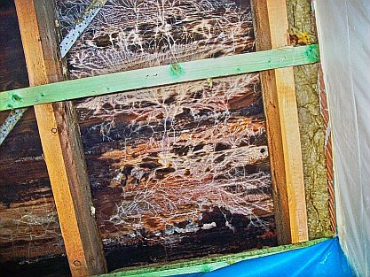
.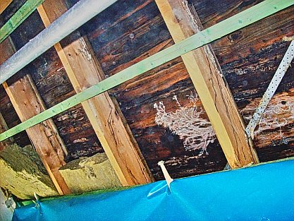
.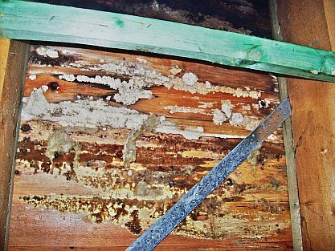
.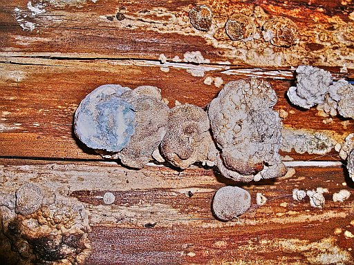
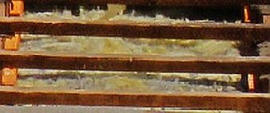
Einer SSB-Seminarankündigung ist zu entnehmen:
Zu empfehlen ist auch das Prospektmaterial der Produkthersteller für WDVS-Sanierung oder das Getrommel für angeblich schmutz- und wasserabweisende aber trocknungsblockierende Kunststoffanstriche gegen die gewohnte Verschimmelung der WDVS-Oberflächen. Da gehen einem die Augen über. Nach der Lektüre verzichtet man vielleicht lieber auf derart leichte Bauweisen und darf dann wieder über Massivkonstruktionen aus Stein bzw. Vollholz nachdenken. Darin verrecken die Bewohner höchstens an Altersschwäche und nicht an Schimmelpilz und Asthma. Waren denn unsere alten Baumeister alles Volldeppen, nur weil sie praktischer Erfahrung vertrauten? Na also!
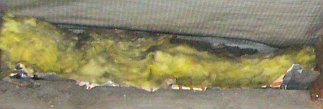
Das Geschäftsgebaren der Kunststoffindustrie geht aus folgender Meldung des Obermain-Tagblatts vom 12.11.1999 recht anschaulich hervor:
Modergeruch schon an der Haustür des Lübecker Klinkerhauses. Penetrant verstärkt er sich im Schlafzimmer von Dietmar Nieschalk. Auf einer Fläche von zwei Quadratmetern haben dort Schimmelpilze die Tapete schwarz verfärbt und zum Teil völlig zerfressen. "Ein starkes Stück", entfährt es Klaus Senkpiel."
Klaus Senkpiel ist ein Biochemiker vom Institut für Medizinische Mikrobiologie und Hygiene der Uni Lübeck. Er und sein Mitarbeiter Dirk Sassenberg bekamen den Auftrag der stern-Redaktion, die Zusammenhänge zwischen Wärmedämmung, Wohnklima und die Schadstoffbelastung der Raumluft an den folgenden Beispielen zu untersuchen.In drei Domizilen haben (die Gutachter) Drägerpumpe [KF: zur Messung der Luftbelastung bzw. Schadstoffbelastung / Verunreinigung der Luft], Luftkeimsammler und Infrarot-Thermometer aufgestellt. Fazit bei Dietmar Nieschalk: "Die Wohnung ist unbewohnbar", sagen die Hygieniker. Die Verunreinigung mit Schimmelsporen: 3325 "koloniebildende Einheiten" (KBE) in einem Kubikmeter Luft. Ab 100 KBE gilt die Atemluft als "belastet".
Der stern klärt auf, wie es dazu kam: Kurz nachdem die alten Fenster (Baujahr 1969) gegen "Kunststoffrahmen mit Isolierverglasung" und selbstverständlich hermetisch bzw. luftdicht abschottender Lippendichtung ausgetauscht waren (als mietrechtliche "Modernisierung" immer auf Kosten des Mieters!), ging es los:"Bald darauf tauchten die ersten Flecken auf. Nieschalk wurde krank und dreimal in der Klinik behandelt, ohne dass die Ärzte die Symptome erklären konnten. Erst als seine Tochter ihm ein anderes Zimmer zum Schlafen hergerichtet hatte, ging es ihm besser."
Heutzutage sind der Umweltmedizin die bösen Folgen des Einatmens von Schimmelsporen klar: Allerlei allergische Reaktionen / Allergien und sonstige Krankheiten wie: Bronchitis, Asthma, Haut-und Augenreizungen, chronische Erschöpfungszustände, Leber- und Nierenschäden. Gerade für Kinder/Kids und alte Menschen/Senioren können Mykotoxine (Stoffwechselprodukte der Schimmelpilze) lebensgefährlich werden:"Im amerikanischen Cleveland starben neun Kinder an Lungenblutungen, weil die Häuser, in denen sie lebten, nach Überflutungen vom extrem giftigen Pilz Stachybotrys atra [KF: auch "Stachybotrys chartarum"] befallen waren." (Zwei Quellen dazu: Toxic Effects of Indoor Molds (RE9736), Infant Pulmonary Hemorrhage in a Suburban Home with Water Damage and Mold )
Früher hatten die Häuser regelmäßig durch ihre intelligente Bauweise mit etwas
fugendurchlässigen Fenstern ausreichend Luftaustausch, was den Schimmelpilzbefall nahezu sicher ausschloß.
Doch die Lobbyisten setzten in der Wärmeschutzverordnung von 1995 als nahezu Gesetz durch, daß im Neubau
winddurchlässige Bauteile als Baumangel gelten und entsprechend Schadensersatzansprüche auslösen
können. Obendrein konnten die alten Fenster als Sollkondensator die überschüssige Raumluftfeuchte /
Luftfeuchtigkeit abkondensieren. Damit blieb der Bau selbst immer trocken.
Die Isolierscheiben der modernen Fenster können das eher nicht. Folglich bildet sich Schimmel in den vom
Heizluftstrom ausgesparten Zimmerecken und Wandkanten zum Boden - oft lange Zeit unbemerkt hinter Möbeln, Tapeten
und Wandverkleidungen. Ist dann der Feuchtegehalt ausreichend, braucht es nur wenige Tage, um aus den überall
vorhandenen Schimmelsporen echten Schimmelbefall auskeimen zu lassen. Die Bau- und Möbelstoffe sind meist ideale
Brutböden für den Schimmel:
Ihre organischen (natürlichen und synthetischen Ursprungs) Bestandteile dienen dem Schimmel als hervorragende
Nahrungsquelle. Bauchemie in Farben, Anstrichen, Putz, Beschichtungen, Tapeten, Bodenbelag, Dämmstoffen usw.
heißt eben auch Schimmelbrutstätte, nicht nur sonstiger Schadstoffgehalt (nachzulesen bei Ökotest). Das
tödliche Risiko für die im eigenen Mief erstickenden und verschimmelnden Hausnutzer gehen die davon
profitierenden Lobbyisten und deren Anhänger in der politischen Administration erfahrungsgemäß ohne
jegliche Bedenken ein. Mir liegt eine Unzahl von leichtfertig abgekanzelten Beschwerdeschreiben des Hamburger
Schimmelsachverständigen Rolf Köneke an die Politik bis auf EU-Ebene vor, die das belegen.
"Die zweite Wohnung, die Senkpiel und Sassenberg ... besuchten, ist ein Plattenbau im Schweriner Vorort Lankow, eingehüllt in eine neun Zentimeter dicke Wärmedämmschicht. Seit der "Sanierung" klagt die Bewohnerin Brigitte Sieverkropp über Atembeschwerden und trockenen Schnupfen. Dass der Bau dicht ist, kann man sofort spüren. Die Luft ist stickig; obwohl die Heizkörper kalt sind, herrschen fast 20 Grad Raumtemperatur.
... die Umwelthygieniker (durchstreifen detektivisch) die 42-Quadratmeter-Wohnung, messen in allen Ecken, (entnehmen dem) Staubsaugerbeutel ... Proben ..., und kraxeln schließlich auf den Dachboden. "Das müssen Sie sehen", ... Senkpiel hält einen Haufen Krümel in der Hand: die gehäckselten Reste der Wärmedämmung, die offenbar die Handwerker nach der Sanierung flächendeckend auf der obersten Geschossdecke des Plattenbaus verteilt haben. "Das rieselt durch die feinste Fuge, wird bei jedem kräftigen Windstoß durch die Lüftung nach draußen geblasen und durchs geöffnete Fenster in die Wohnung." (Nach den folgenden Laboruntersuchungen / Laboranalysen ist die) Mineralwolle ... mit Schimmel belastet. ... Schlafzimmerluft 727 KBE Schimmelsporen pro Kubikmeter Luft. Fazit: Auch ein ansehnlich erneuertes Gebäude kann zum Gesundheitsrisiko werden.
Was also könnte passieren, wenn jetzt die Bundesregierung als Gegengift zu Ökosteuer und Energiepreisschock ein neues Programm zur Förderung von Wärmedämmung auflegt? 400 Millionen Mark jährlich sollen in dieses Altbausanierungsprogramm fließen - zusätzlich zu bereits existierenden Fördermaßnahmen der Kreditanstalt für Wiederaufbau?
Dämmen wir uns krank? Belasten wir, staatlich gefördert, unser Wohnklima, um das Weltklima zu schonen? ..
... Familie Vogt-Zembol, mit ihrem sechs Jahre alten Niedrigenergiehaus in Hamburg (als dritte Station der stern-Untersuchung) ... ist vorbildlich in Sachen Energieverbrauch. Kosten für Heizung und warmes Wasser bei 125 qm Wohnfläche: nicht mehr als 57 Mark.
Doch auch hier ... im Wohnzimmer ... erhöhte Konzentration von Schimmelpilzen: 747 KBE pro Kubikmeter, gemessen, nachdem die Lüftung mehrere Stunden abgeschaltet war. Die Sporen können aus dem Erdreich unter dem nicht unterkellerten Haus stammen oder - da haben wir sie wieder - aus der Wärmedämmung. Die ist, ökologisch korrekt, aus Zellulose und laut Hersteller gegen Schimmel imprägniert. Hilft aber nicht immer, sagt Senkpiel. "Wir haben nach Feuchteschäden bei Zellulosedämmung häufiger Schimmelbefall gemessen." ... SVEN RHODE, Mitarbeit: Ingrid Lorbach"
Solche Tatsachen halten aber unsere edlen Medienschaffenden nicht ab, die grausamsten Schönrednereien der wirkungslos mit Pestiziden, Fungiziden und sonstigen Giften "vergüteten" "Öko-Dämmstoffe" redaktionell und ohne Kenntlichmachung als industrielle Werbepropaganda und der Autorenschaft zu bewerben und damit den geneigten, gutgläubigen Blättla-Leser in die heimtückische Ökofalle zu locken. Am 16.2.2005 schreibt dazu die Neue Presse Coburg auf Seite 4 seiner Beilage "Umbau-Ausbau-Modernisierung" in "Öko-Dämmstoffe im Überblick": "... Auch hinsichtlich der Brandsicherheit sowie der Widerstandsfähigkeit gegenüber Schädlingen und Schimmel gibt es [bei natürlichen Dämmstoffen] keine Probleme". Ja hei - wieviel zellschädigendes Gift müssen die Hersteller aber dafür reintun? Oder liefert das Dämmschaf und die Dämmpflanze dank vergifteter Nahrungsquellen die Toxizität gleich mit? Gebt ehrlich Auskunft, liebe Ökoapostel der Öko-Industrie! Bitte, bitte!
Dazu ein Beispiel: Der Schimmelpilz breitet sich ja besonders gerne aus in angeblich dauerhaft luftdicht versiegelten Leichtbaukonstruktionen, die in "luftdichten" Niedrigenergiehäusern und Passivhäusern inzwischen DIN-Standard sind. Was meint die aktuelle Bauforschung dazu? Bitteschön: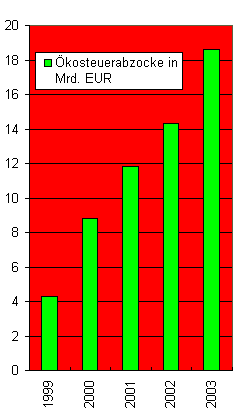
Wie ist es zu bewerten, wenn sogar Denkmalpfleger in Fachartikeln so zum "Richtig Dämmen am Denkmal" aufrufen, wie der ansonsten gegen den Dämmwahn engagierte Prof. Dr.-Ing. Jörg Schulze, Beratender Architekt für Altbausanierung und Denkmalpflege, Bonn, in Bauhandwerk 10/2004, S. 44 ff.?:
Man kann ... festhalten, dass wärmetechnische Verbesserungen historischer Bauten nur dann energetisch sinnvoll und wirtschaftlich sind, wenn die Wärmedurchgangskoeffizienten der vorhandenen Außenhülle wirklich schlecht sind, das heisst einen U-Wert von 1,0 W/m²K erheblich übersteigen. ...
Historische Bauten mit dünnen Massivwänden, wie beispielsweise Fachwerkbauten und Siedlungsbauten der 1950er Jahre mit nur 24 cm dickem Ziegelmauerwerk bedürfen allerdings wirklich einer nachträglichen Dämmung [um] zu gewährleisten, dass in ihnen ein behagliches Wohnklima und damit eine Nutzung ermöglicht wird, ohne die in einem gesättigten Wohnungsmarkt eine langfristige Erhaltung überhaupt nicht mehr denkbar wäre. ... Zusammenfassend kann man sagen, dass eine Dämmung die inneren Oberflächentemperaturen in der Fläche weiter anhebt. Die schon vor der Dämmung eher geringe Gefahr von Oberflächenkondensat wird hier also weiter reduziert. ..."
Die dann folgenden Tipps bis zur Innenvorsatzschale von "Kalziumsilikatplatten oder Leichtlehm" bis zur "halbsteinigen Ziegelmauer" oder "Schicht aus aufrecht vermauerten Ziegeln" sollen dann die Innenwandtemperatur bei minus 10 °C auf "16 bis 17 °C" anheben.
Freilich verspricht die Produktwerbung für die raumseitige Wärmedämmung mit Calciumsilikat-Dämmplatten "außerordentlich günstige bauphysikalische Eigenschaften" wie "gute Dämmwirkung", "niedrige Wärmeleitfähigkeit", "hohe Kapillarität", beste "Feuchtespeicherung im Bereich von 40-80 Prozent relative Luftfeuchte", "hohe Alkalität als zusützlicher Widerstand gegen Schimmelpilzbefall". Die CS-Platten sollen nun in den Wintermonaten das anfallende Kondensat, Folge des Dampfdruck- und Temperaturgefälles und der Überschreitung des temperaturabhängigen Sättigungsdampfdrucks durch den Wasserdampfdruck im Bauteil sicher und schimmelvermeidend aufnehmen. Wieso? Weil das Wirkprinzip der CS-Platte bei Kondensatanfall einen starken kapillaren Flüssigkeitstransport garantieren soll und dadurch schnell zu einer großen räumlichen Verteilung des Kondensats in der Platte führt und damit zu einer Reduktion bzw. Verminderung der lokalen Tauwasserbelastung. Versprochenes Resultat: Feuchteschäden wie Schimmelpilzbildung, Materialkorrosion, sichtbare Wasserflecken und weiter feuchtebedingte Mängel wären so zu vermeiden.
 Die Wandflächen wurden mit Kalziumsilikatplatten verkleidet - und prompt wächst
der Schimmelpilzbefall eben darauf. Mehr Info zum Feuchtethema hier:
"Aufsteigende Feuchte - gibt es die?".
Die Wandflächen wurden mit Kalziumsilikatplatten verkleidet - und prompt wächst
der Schimmelpilzbefall eben darauf. Mehr Info zum Feuchtethema hier:
"Aufsteigende Feuchte - gibt es die?".Zumindest die Denkmalpflege sollte den Dämmfans auch hier keinen kleinen Finger reichen. Auch nicht, wenn sogar ein noch im Amt befindlicher "Leiter Bau- und Kunstdenkmalpflege im Landschaftsverband Rheinland beim Rheinischen Amt für Denkmalpflege", Herr Dr. Ludger J. Sutthoff im DAB 9/04 in: "Wärmedämmung am Baudenkmal, Empfehlungen der Denkmalpflege" neben sehr viel beherzigungswerten Ermahnungen und Hinweisen zu Gefahren durch Dämmen leider auch schreibt:
Die Zellulosedämmung nimmt dann diese Feuchtigkeit auf und sorgt dafür, dass z. B. bei einer Fachwerkaußenwand die Holzbalken so feucht liegen, daß sie innerhalb relativ kurzer Zeit großen Schaden nehmen. Mir sind nur wenige Fälle bekannt (v. a. mit nur sehr geringen Dämmstärken), in denen die von der Zellulosedämmung aufgenommene Feuchtigkeit auch wieder an den Raum abgegeben werden konnte."
Weiter mit Sutthoff:
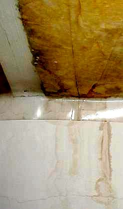
Und so sieht es dann ganz praktisch aus, wenn das staatliche hessische Bauamt im Regierungsgebäudedach zwischen den Sparren dämmen läßt. Dunkle Flecken auf dem Dümmstoff sind lebensgefährlicher Schwarzschimmelbefall, Drempelwandflecken sind soßige Ablaufspuren der unvermeidlichen Kondensate aus der Dämmung, die fleißig unter der hochintelligenten Dampffolie herabrinnen. Ein Bild aus meiner Bauberatung.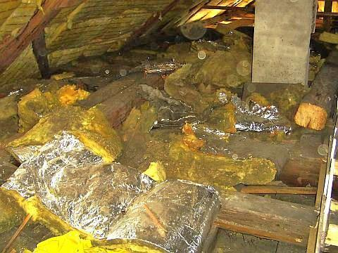
Im Detail: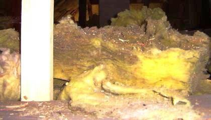
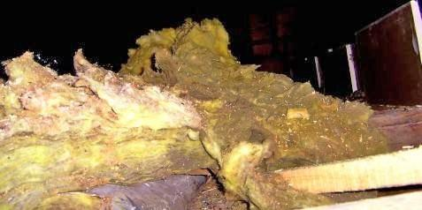
Und auch das im gleichen Dach vom Neubesitzer - gegen den Ratschlag der Denkmalpflege / des Denkmalamtes / der Denkmalschutzbehörde schon eingebaute Gespinst in der nicht unterlüfteten / hinterlüfteten Dachsparrenebene ist - genau dort, wo die Warmluft oben im Dachgiebelbereich anstreift - schon im Bauzustand durch Aufnahme von Raumluftkondensat angeschimmelt: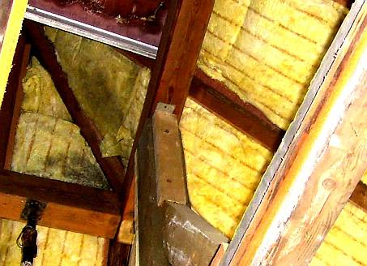
Man gönnt sich ja sonst nix. Es muß schon Vollsparrendämmung bzw. Sparrenvolldämmung oder gar Zwischensparrendämmung sein, wenn ein Dach mit Dämmstoffen vergewaltigt wird, bis der Dachbesitzer das Wort Wärmedämmung nicht mehr kennen mag. Und selbstverständlich ist die sicherste Lösung zum Durchnässen der Dachebene bzw. Dachkonstruktion, wenn man auf die Dachschalung eine hermetisch abgeklebte Dichtungsebene aufbringt, also Folie oder Bitumenbahn, und nicht im Eifer des Gefechts vergiß, auch die Unterseite der Dachebenen möglichst dicht zu versiegeln - am besten mit hoch-intelligenter Dampfbremse. Die tut so, als ob sie denken könne - schafft aber über kurz bzw. gar nicht so lang die allerbeste Aufnässung und Durchfeuchtung des Sparrenzwischenraumes. Und das gaaaanz sicher nicht nur im denkmalgeschützten Bauwerk!
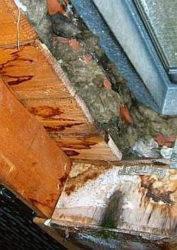
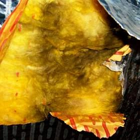
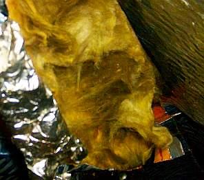
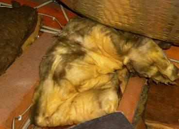
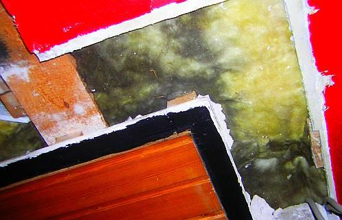
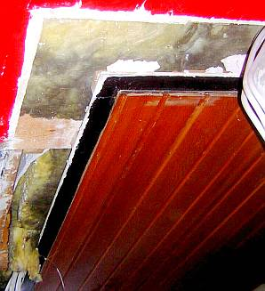
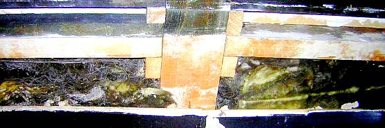
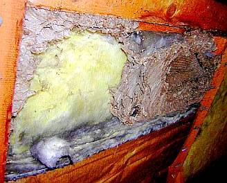
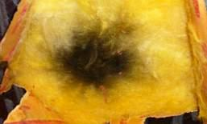
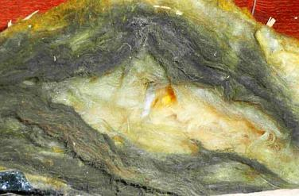
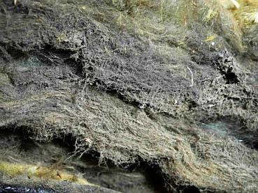
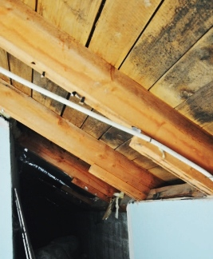
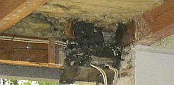
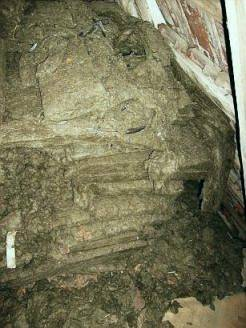

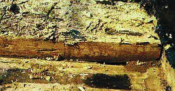
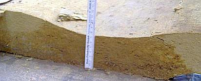
 Schwarzschimmelmäßig
naß angesiffte und fachmännisch als Sparrenvolldämmung angetackerte alukaschierte Mineralfasergespinste nach Freilegung - so krank(machend) sieht es unter
mehr und mehr deutschen Dächern aus! Weitere krasse Fälle hier.
Schwarzschimmelmäßig
naß angesiffte und fachmännisch als Sparrenvolldämmung angetackerte alukaschierte Mineralfasergespinste nach Freilegung - so krank(machend) sieht es unter
mehr und mehr deutschen Dächern aus! Weitere krasse Fälle hier.
Doch Selberdenker Vorsicht! So schimmelvernäßt sieht es fallweise am Dachspitzla unter einer Holzdämmung" aus - es kommt also schon drauf an, was man draus macht:

Nochmals: BAU.DE > Forum > 1565: Tauwasser in der Zwischensparrendämmung
Wem's noch nicht langt:
Weiterführende Information zum Wärmedämmen.
www.renorga.de/verdaemmt/ - Verdämmt in alle Ewigkeit? - Ein Hamburger Wohnungsbaudämmskandal
Informationen des Bauphysikers und Architekten Prof. Dr.-Ing. habil Claus Meier, dem
Schrecken des U-Werts, auch von ihm:
Einspruch gegen den Entwurf zur DIN 4108-2
und: gegen den Entwurf zur DIN 4108-3
NABU: LEITFADEN ÖKOLOGISCHE DÄMMSTOFFE - wer unbedingt ökomäßig Dämmen will, kann sich hier informieren